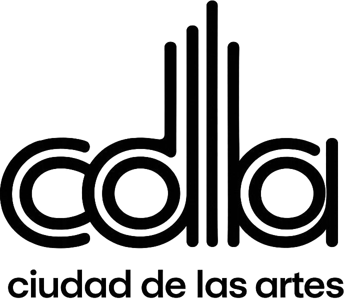
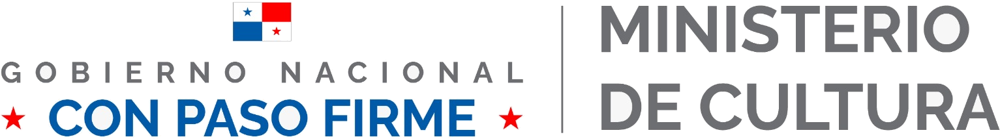

Hacktoberfest Hack Day Panama City x Python Panamá
Charla 1 de 3 · 9:40 – 9:50 a. m. Ciudad de las Artes, salón D-112 · Llanos de Curundú, Ciudad de Panamá
OrganizaEn colaboración con


Bienvenidos 👋
Hoy no venimos a escuchar charlas.
Venimos a dejar código, documentación o traducciones en proyectos reales que usa gente que no está en este salón.
Al final del día, cada persona se va con al menos una contribución enviada.
Qué queremos lograr hoy
Si nunca has contribuido
Si ya contribuyes
Tu primera contribución enviada, de código o no-código
Al menos un PR con contenido real, alineado al tema de IA abierta
Entender el flujo completo sin memorizarlo
Ayudar a alguien de la mesa de al lado a enviar el suyo
Saber a dónde volver el lunes
Salir con un proyecto al que quieras volver
Meta del día como comunidad: que nadie se vaya a las 3:00 p. m. sin haber enviado algo.
Antes de arrancar
Wifi — redes «Molas» y «Sombrero Pintao»; pide la clave al equipo en la sala.
Baños — por la puerta gris señalada
Tomacorrientes — hay 3 en el salón; compártelos y túrnense para cargar
Agua y snacks en la zona de descanso; brindis con boquitas a las 12:00
Si pasa algo
Emergencia médica, incendio o riesgo: llama al 911 y avisa a alguien del equipo (suéter de Hacktoberfest).
Si hay una urgencia o hay que movernos, Arnulfo lo avisa a todo el salón. Sigue sus indicaciones.
Algo te incomoda o ves una falta al Código de Conducta: díselo a Arnulfo en privado, o escribe directo a MLH: incidents@mlh.io · +1 409 202 6060.
Time11:00Rings4
Para no perder tiempo a las 11:00
Antes de las charlas de las 10:30, deja listo:
Cuenta de GitHub — github.com/join. Si no tienes, un mentor te ayuda ahora.
Git instalado — o nada: también se puede contribuir desde el navegador.
Tu laptop cargada y conectada al wifi.
Extensión de IA: si competirás en Gemma, prepara tu clave personal de la Gemini API siguiendo la plantilla. Ollama local sirve para explorar, pero no cumple el reto Gemma.
10 minutos para conversar
A las 10:00: vemos juntos la ceremonia de cierre de MLH en Twitch. 10:30: ¿Qué es Hacktoberfest?
 En colaboración con
En colaboración con